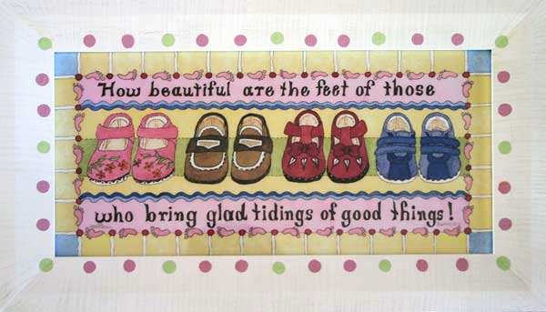

 Andy has n pairs of shoes in n different colors. At the end of the day he likes to put them back on his shoe rack. He has learned to always put a left shoe together with a right shoe. However, he has not learned about putting pairs of shoes with the same color together. Papa's job is to pair up the shoes. Since Papa is tired from work at the algorithm factory, he wants to do this in the minimal number of steps. One step means to swap two shoes.
Your job is to help Papa.
Input format: As usual, the first line contains the number of test cases. Each test case consists of a single line starting with total number of pairs of shoes n. The following 2n numbers describe the initial arrangement of shoes on the rack. Each shoe is labeled by a positive integer at most 10,000 where two shoes share the same label if and only if they are part of the same pair. Both the left and right shoes of a given pair will be present (remember that left and right shoes alternate).
Output: For each test case, output one line containing a single number - the minimum number of swaps needed to pair up all shoes.
2 2 2 1 1 2 4 1 2 3 4 4 1 2 3
1 3